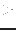

The task is designed to make a mask image (ie an image of boolean values) by applying a selection expression to the pixel values of an input image. These pixel values are assigned to a variable named `VAL' in the selection expression. Hence for example if one wished to mark as TRUE all pixels of the input which exceeded 7.3 in value, one would call immask with expression=`VAL  7.3'. All the syntax provided by selectlib is available for this selection expression.
The output mask image is the same size as the input image. All attributes (keywords), including WCS keywords, but excluding keywords related to any data subspace (DSS) in the input image, are copied to the output image. The input image is expected to be in the primary array extension of the input dataset and only this extension is written to the output.
The data type of the output is not actually boolean, but 8-bit integer: the values are either 0 or 1.